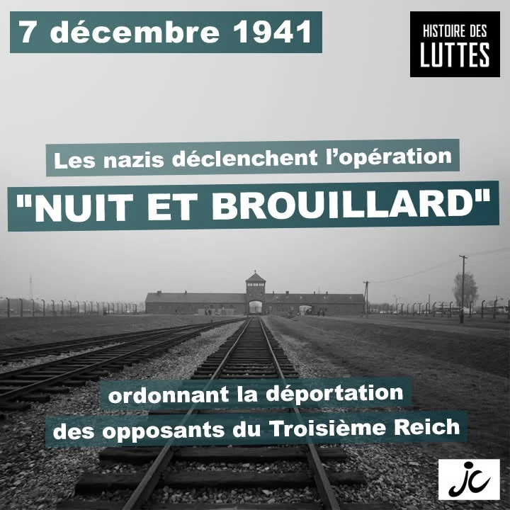

Publication relayée par le PCF 79
« Nuit et Brouillard ». Un rappel du décret nazi de décembre 1941
Date de mise à jour indiquée par Facebook · 7 décembre 2022
Texte de la publication · Histoire des luttes
7 décembre 1941 : Les nazis déclenchent l'opération "Nuit et Brouillard" (Nacht und Nebel en allemand), elle donne l'ordre de déporter les opposants et ennemis du Troisième Reich en Allemagne sans préciser leur sort.
Elle servira à faire disparaitre les résistants et prisonniers en les isolants dans le secret et loin de leurs proches. Dans bien des cas, les transferts serviront simplement à couvrir discrètement les assassinats.
Le nom "Nuit et Brouillard", est issu d'une référence à l'opéra de Wagner "L'or du Rhin", il sera réutilisé comme titre pour le film documentaire d'Alain Resnais sorti en 1956 dont la réalisation a été décidé pour commémorer les 10 ans de la libération des camps ainsi que pour la célèbre chanson de Jean Ferrat sortie en 1963.
#hdl #histoire #luttes #2emeguerremondiale #shoah #Holocauste

Sources
Histoire des luttes · publication relayée par le PCF 79 · bibliothèque Facebook · AR-0002-FB-01801
À lire aussi · À Châteaubriant, l’hommage du 22 octobre aux fusillés · Le lien d’origine